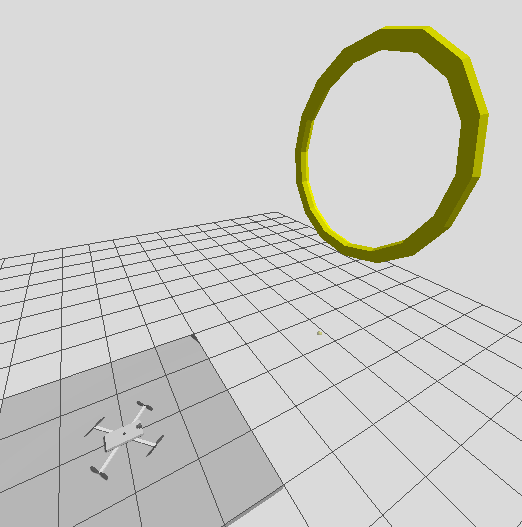

Autonomous Quadcopter Ring-Gate Navigation via Reinforcement Learning
Reinforcement learning for autonomous navigation through ring gates

Project Overview
This project implements an autonomous quadcopter capable of navigating through a sequence of ring-shaped gates using a reinforcement learning (RL) policy trained with Proximal Policy Optimization (PPO). The system spans two parallel implementations: a high-fidelity ROS2/Gazebo simulation stack used for realistic deployment testing, and a lightweight, pure-Python "faithful" training environment designed to replicate the deployment stack's dynamics, perception, and control logic closely enough that a policy trained in one transfers meaningfully to the other. This dual-environment approach lets the team iterate on RL training quickly (the faithful simulator runs far faster than Gazebo) while still validating behavior in a physically realistic, sensor-driven simulation before any real-world consideration.
Demo Video comparing with Finite State Machine:
Video shows a side-by-side comparison of the RL policy (right) and a hand-coded finite state machine (FSM) controller (left) navigating through a sequence of ring gates in the Gazebo simulation. The RL policy demonstrates smoother, more efficient navigation, while the FSM exhibits oscillatory behavior and occasional gate misses.System Overview
Perception: LiDAR point clouds are processed to detect ring-shaped clusters (lidar_perception.py), producing a smoothed 11D observation (bearing, distance, velocity, previous action). The faithful simulator (faithful_perception.py) reproduces this synthetically with realistic noise, dropout, and bias.
Control: A shared "search vs. lock" strategy — sweeping to find a ring, then locking onto and tracking it once detected — is implemented near-identically in deployment (rl_controller.py) and training (faithful_controller.py), so the RL policy learns behavior consistent with the real controller.
Dynamics: Deployment uses PX4/Gazebo physics via a frame-conversion bridge (px4_bridge.py); training uses a simplified first-order velocity model (faithful_dynamics.py) for speed.
RL Policy: A PPO model (train_ppo_faithful.py) maps the 11D observation to a 3D velocity command, deployed live via fast_rl_policy_runner.py.
Reward: faithful_ring_env.py implements a dense, curriculum-staged reward combining progress shaping, alignment bonuses, anti-oscillation penalties, and a quality-weighted bonus for centered, well-aligned gate crossings versus a penalty for misses.